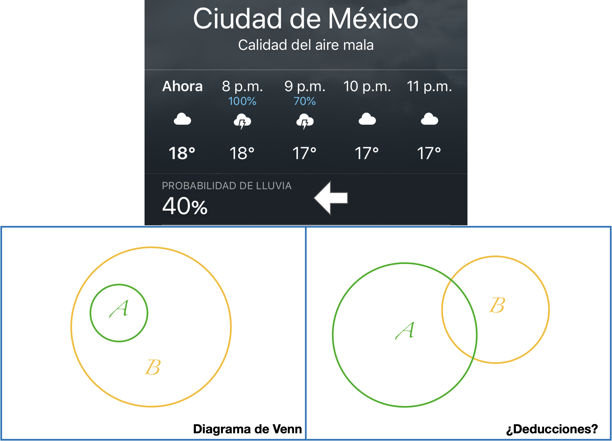
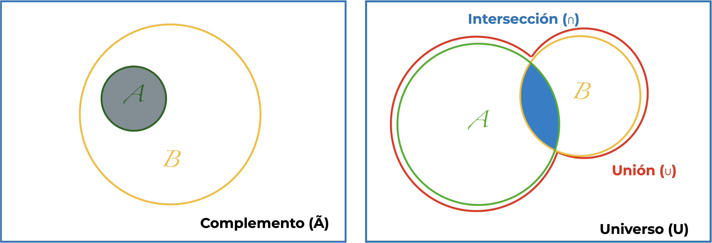
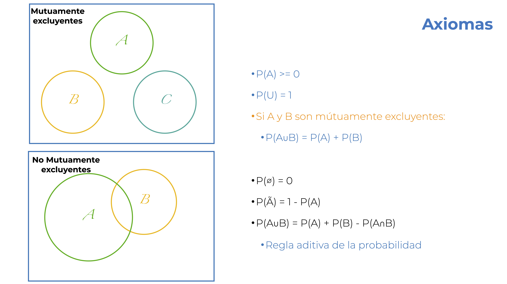
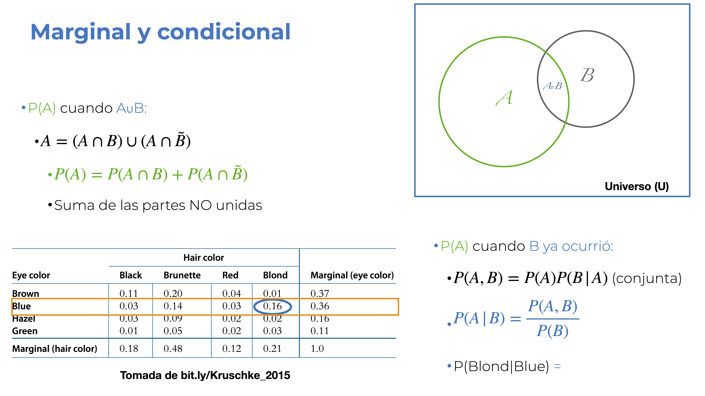
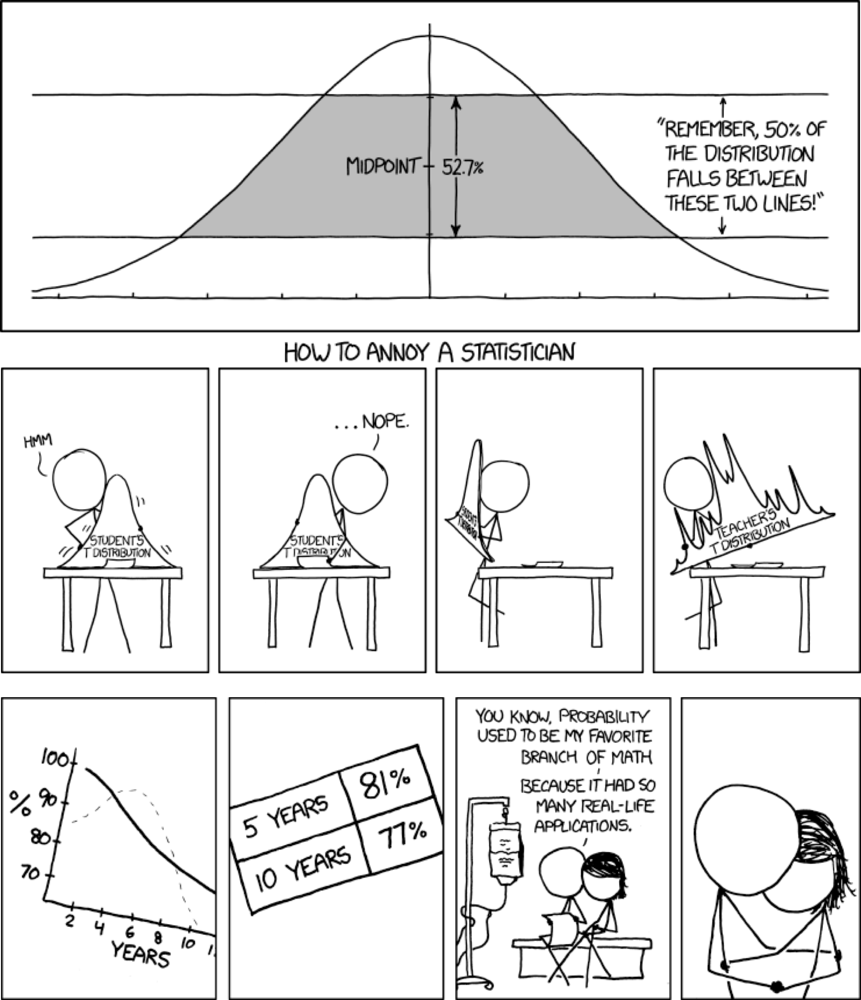
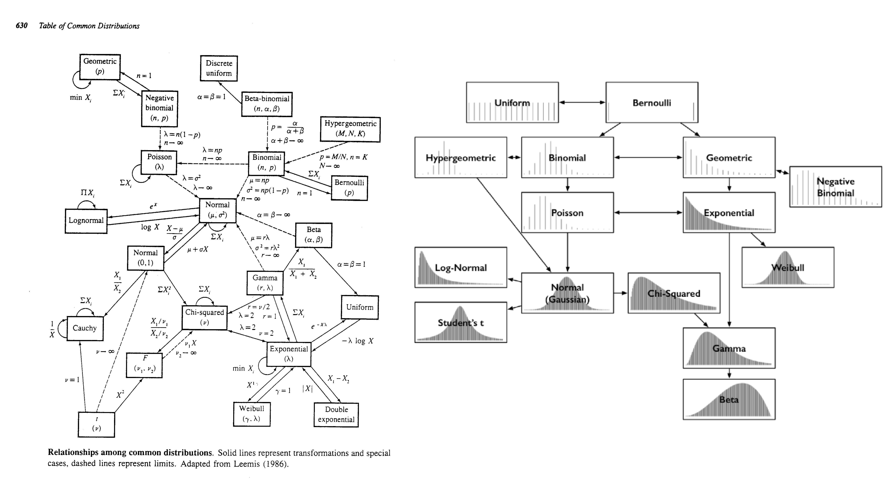
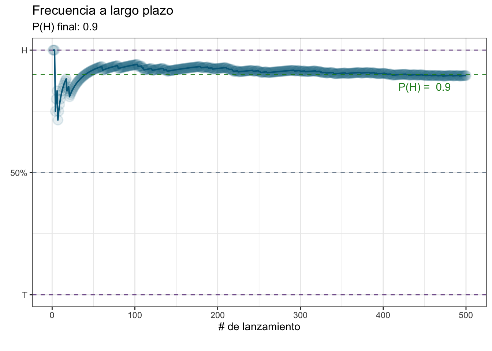
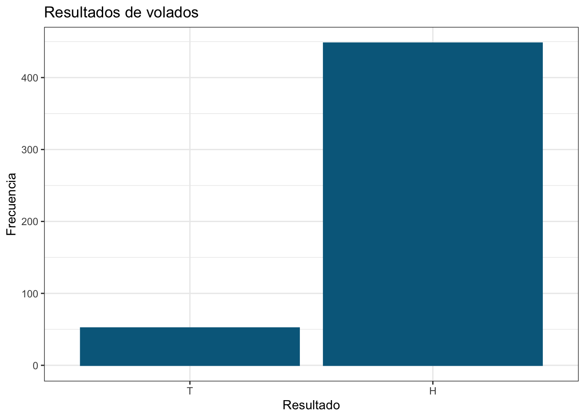
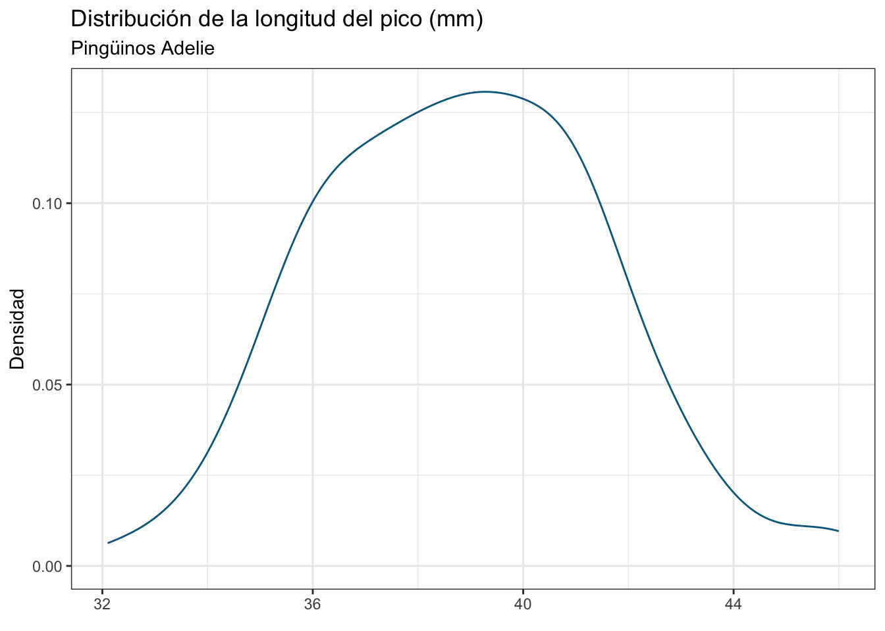
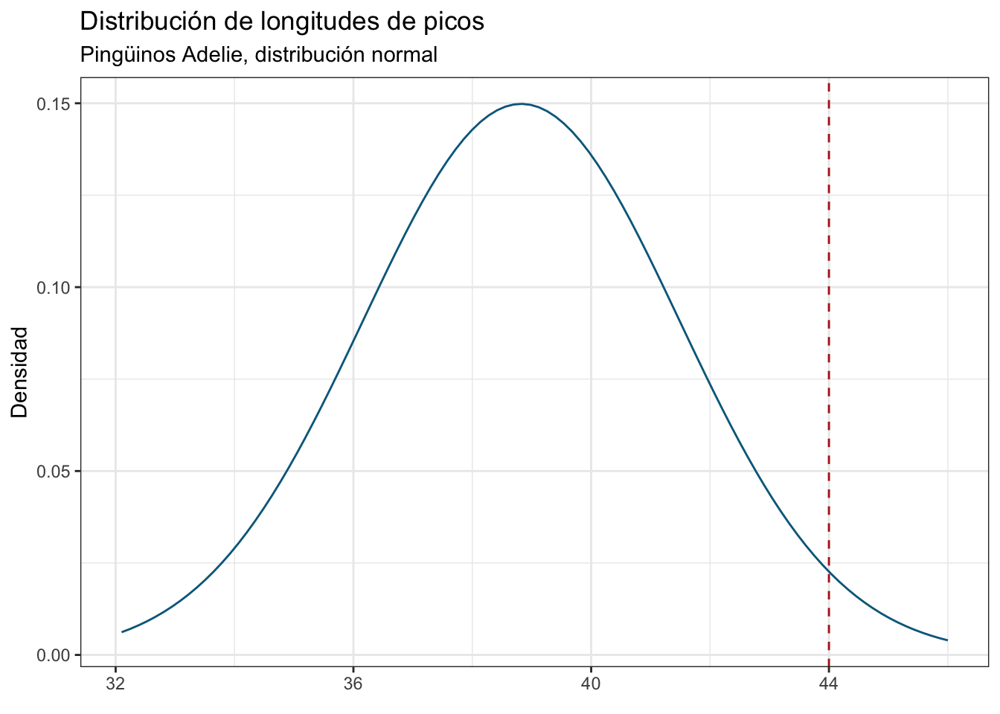

rbinom(n = 4, size = 1, prob = 0.5)[1] 0 0 0 1Antes de entrar a aplicar pruebas estadísticas y técnicas de aprendizaje automatizado es necesario que te familiarices con el concepto más fundamental de todo el curso: la probabilidad. Somos conscientes de que la mayor parte de las situaciones en nuestro día a día no son completamente predecibles, ni que decir de los problemas que queremos resolver en nuestras investigaciones, y entonces nos topamos con una pared cuando tratamos de aplicar la lógica deductiva en este escenario de incertidumbre. Si yo te digo que “hay un 40% de probabiliidad de lluvia para hoy” y te pregunto si sales con una sombrilla es bastante posible que no puedas dar una respuesta inmediatamente. La lógica deductiva tipo “Dado que A entonces B” solo sirve en escenarios de certeza. Mira el diagrama de Venn de la diapositiva de abajo. Si te digo que ocurrió A, ¿qué me puedes decir sobre B? Es esencialmente el mismo escenario que con la probabilidad de lluvia. No podemos dar una respuesta definitiva, lo único que sabemos es que están traslapados en una fracción y que en otra fracción no, por lo tanto, lo único que podemos decir es que hay cierta posibilidad de que también haya ocurrido B.

Al aproximarnos a la probabilidad desde la geometría podemos valernos de diagramas de Venn para hacer más intuitivas las interpretaciones. En pocas palabras, un diagrama de Venn es una representación gráfica sobre las relacones lógicas entre conuntos. ¿Recuerdas el diagrama sobre la ciencia de datos de la primera sesión? Es un ejemplo de un diagrama de Venn.
Habrás notado que he evitado utilizar la palabra probabilidad hasta este momento. Esto es porque la probabilidad es justamente el asignarle un número a las posibilidades y, por lo tanto, podemos pensar en la probabilidad com una medida de incertidumbre. ¿Cómo la expresamos numéricamente? La manera más sencilla de entender a la probabilidad es desde un punto de vista geométrico; es decir, como una proporción o una frecuencia relativa, de la forma ¿cuántas veces ha ocurrido B en relación al número de veces que han ocurrido tanto A como B? Pero vayamos paso a paso.
Primero, algunas (tediosas y obligadas) definiciones:
Otros eventos son:

¿Qué tiene que ver esto con probabilidad? Pues que estas denominaciones dan lugar sus leyes/reglas; es decir los Axiomas de la Probabilidad:
Adicionales a estos tres axiomas tenemos dos casos especiales y una generalización:

Ahora entendimos que podemos hacer operaciones con la probabilidad, y eso nos lleva a los siguientes dos conceptos que son sumamente importantes: las probabilidades marginal y condicional.
Hablamos de una probabilidad marginal cuando nos interesa la P(A) cuando \(A \cup B\). En este caso, podemos expresar al conjunto A como \(A = (A \cap B) \cup (A \cup \tilde{B})\). ¿En Español? El conjunto A está dado por la unión de la intersección de A y B y la intersección de A con el complemento de B. ¿Aún menos rebuscado? Es la suma de las partes no unidas. El procedimiento aquí es justamente un caso similar a la regla aditiva de la probabilidad. Estamos sumando la zona traslapada entre A y B con lo que no es B, que nos deja únicamente con A. Te preguntarás por qué se denomina marginal. Para esto primero necesitamos definir una tabla de contingencia. Esta es simplemente una tabla en la que cada renglón tiene frecuencias relativas de los distintos niveles de una variable categórica y las columnas tienen las frecuencias relativas de cada nivel de otra variable categórica. En los márgenes de la tabla tenemos los totales para cada nivel (evento o conjunto) y de ahí viene el nombre.
Por otra parte, la probabilidad condicional nos permite responder a la pregunta ¿cuál es la P(A) si ya sé que B ocurrió?. Matemáticamente la representamos como \(P(A|B)\) (probabilidad de A dado B), y es una razón de la probabilidad conjunta de A y B (\(P(A,B)\) o \(P(A \cap B)\)) y la probabilidad marginal de B (\(P(B)\)); es decir: \(P(A|B) = \frac{P(A,B)}{P(B)}\). La probabilidad conjunta representa la probabilidad de que dos eventos ocurran al mismo tiempo y puede llegar a ser un poco problemática. Si ambos eventos son independientes, obtenerla es sencillo: \(P(A,B) = P(A)P(B)\). El problema surge si A y B no son independientes, en cuyo caso: \(P(A,B) = P(A)P(B|A)\), lo cual nos lleva a una referencia cruzada. Por practicidad, y porque el interés del curso no es que sepas hacer estas cosas a mano, obtengamos la probabilidad conjunta desde su posición en la tabla de contingencia; es decir, cada una de sus celdas.

En el ejemplo de la diapositiva (OJO: los datos no son representativos de ninguna población) calculamos la \(P(Blond|Blue)\); es decir, la probabilidad de que alguien sea rubio si sabemos que tiene los ojos azules, dada por la división de la probabilidad conjunta \(P(Blond,Blue) = 0.16\) y la marginal \(P(B) = 0.36\) que resulta en \(P(Blond|Blue) \approx 0.44\). ¿Cuál sería entonces la \(P(Green|Red)\)?

Dejando los memes de las viñetas (la inferior es bastante trágica), hablemos de cómo escalar de valores puntuales a algo más aplicado a la investigación. Podemos utilizar nuestra intución de probabilidad de manera cotidiana (e.g., probabilidad de lluvia), pero en cuestiones académicas tenemos una hipótesis de trabajo, la cual trasladamos a pruebas de significancia para realizar inferencias. Eso es algo que abordaremos más a detalle en la siguiente sección; sin embargo, vamos a tener múltiples datos, cuya distribución probabilidad es lo que va a moldear nuestros análisis. Es necesario, entonces, definir qué es una distribución de probabilidad.
En pocas palabras, una distribución de probabilidad es una lista con todos los resultados de un evento y sus probabilidades correspondientes. Hay una gran diversidad de distribuciones teóricas de probabilidad, cada una con sus peculiaridades, parámetros, momentos y lugares para utilizarlas. No te preocupes por aprenderlas todas, hablaremos de las distribuciones relevantes para cada modelo que apliquemos. Por ahora solo es importante que conozcas que, si hablamos de distribuciones discretas, hablamos entonces de la probabilidad de cada resultado. Si tenemos una distribución continua, podemos partirla en intervalos para discretizarla y hablar de la probabilidad de que una observación pertenezca a ese intervalo. Sea cual sea el caso, estas son masas de probabilidad, las cuales suman a 1, tal que:
\[ \sum_{i = 1}^n P(x_i) = 1 \]

¿A qué me refiero con discreta o continua? A los valores que pueden tomar los resultados que dan forma a una distribución. Una distribución de probabilidad discreta solo toma valores enteros o categóricos, mientras que una continua puede tomar valores decimales. La relación de esto con nuestros datos la veremos en la siguiente sesión: muestreo.
Pero volvamos al tema de las distribuciones continuas, porque tienen una cualidad bastante interesante. Resulta que en una distribución continua la probabilidad de cada valor (\(P(x)\)) es 0. ¿Por qué? Porque, por definición, todos los valores en el intervalo de la distribución son posibles y hay una cantidad infinita de ellos (de aquí sale también el problema de la precisión de punto flotante, pero esa es otra historia). ¿Cómo contender con esto? Podemos discretizar la distribución y hablar de masas de probabilidad de los intervalos resultantes (regla de Sturgess, por ejemplo); sin embargo, estos intervalos son, por mucho apellido de autor que lleven, arbitrarios. ¿Entonces? Podemos hacerlos infinitesimalmente pequeños; es decir, aproximar la amplitud de los intervalos a 0 (pero no exactamente 0) y entonces tenemos densidades de probabilidad. ¿Por qué densidad? Porque dividimos la masa de ese intervalo infinitesimalmente pequeño entre su amplitud, lo cual nos deja con una definición similar a \(densidad = \frac{masa}{área}\). Si hacemos eso, nuestras densidades pueden ser mayores a 1, lo cual indica que tenemos una alta masa en relación a la escala. El otro cambio es que, como recordarás de tus clases de cálculo, al pasar de una variable discreta a una continua pasamos de una sumatoria a una integral:
\[ \sum_{i = 1}^n \frac{p([x_i, i_i+\Delta x])}{\Delta x} \Rightarrow \int dxp(x) = 1 \]
No es necesario que memorices esto, solo que tengas en cuenta la diferencia entre masas y densidades de probabilidad. Como añadido, este mismo problema es lo que causa que un gráfico de frecuencias (histograma) no sea la mejor solución para ver la distribución de una variable continua. En su lugar podemos utilizar gráficos de densidad, los cuales hacen lo que acabamos de mencionar (al menos en escencia). ¿Cómo los hacemos? Eso lo veremos más adelante.
Dejando las ecuaciones de lado, la selección de la distribución de probabilidad que utilizaremos depende del problema. ¿Tienes datos de conteos? Puedes utilizar las distribuciones Poisson o binomial negativa. ¿Tienes datos continuos en el intervalo 0-1? Vale la pena echarle un ojo a la distribución Beta. ¿Tienes datos binarios? Deberías voltear hacia la distribución binomial y, de hecho, vamos a explorarla un poco para entender cómo funcionan las distribuciones de probabiliad y cómo podemos aprovechar sus implementaciones en R.
Aunque en el curso vamos a ver distintas ecuaciones y funciones matemáticas, NO es necesario que las memorices. Veremos solo las más indispensables y solo en los momentos en los que sean útiles para dar sentido a los procedimientos que estamos realizando. En general, prefiero utilizar pruebas visuales para que desarrolles una intuición sobre qué es lo que se está haciendo, por qué y para qué, aunque no tengas tatuadas las ecuaciones y resuelvas los problemas a mano. Todos hemos utilizado un microondas y sabemos que no debemos de meterle objetos metálicos pero ¿sabes exactamente cómo ensamblar uno?
Esta no sería una sesión de probabilidad si no habláramos de volados, así que hagamos justo eso. ¿Qué es un volado? Un experimento en el cual lanzamos una moneda y obtenemos uno de dos resultados: cara o cruz. Este resultado podemos verlo de otra manera: éxito (cara) o fracaso (cruz). Si estamos en un escenario de este tipo, en el cual solo podemos tener dos resultados, estamos hablando de ensayos de Bernoulli, y su formalización matemática se conoce como proceso Bernoulli. No voy a entrar en esos detalles porque es innecesario para los fines del curso, solo es un breviario cultural, lo que no es un breviario cultural es que también se les conoce como ensayos binomiales. Sí, binomial como en la distribución que mencioné antes, así que formulémosla paso a paso.
Dependiendo del software o referencia que estés consultando, a la distribución binomial también se le conoce como distribución Bernoulli.
Retomemos la definición de una distribución de probabilidades: “una lista de resultados posibles y sus probabilidades correspondientes”. Entonces la distribución binomial tiene exactamente dos resultados posibles y (por lo tanto) dos probabilidades correspondientes. Ni una más, ni una menos. Si pensamos en un volado tendríamos lo siguiente:
| Resultado | Probabilidad |
|---|---|
| Cara | 0.5 |
| Cruz | 0.5 |
Pero si pensamos un poco más a profundidad en lo que implica la tabla anterior, es decir, solo dos resultados posibles mutuamente excluyentes, y recordamos nuestros axiomas de la probabilidad, podemos generalizarla de la siguiente manera:
| Resultado | Probabilidad |
|---|---|
| Éxito | \(p\) |
| Fracaso | \(q = 1 - p\) |
En otras palabras, dado que solo tenemos dos resultados posibles, la probabilidad de fracaso \(q\) siempre es el complementario del éxito \(p\) (\(1 - p\)). Por esta razón, la distribución binomial tiene un solo parámetro, que representa la probabilidad de éxito.
¿Qué es un parámetro de una distribución? Un número que controla su forma. Piensa en ellos como perillas que cambian la distribución como las perillas de la estufa cambian la intensidad de la flama.
Ahora bien, recordarás que la probabilidad vista desde un punto de vista geométrico representa una proporción; por lo tanto, realmente (y formalmente) tenemos otro parámetro: el número de experimentos (\(n\)). Una forma común de representar textualmente las distribuciones es utilizando notación probabilística:
\[ Y \sim Binom(n, p) \]
Esto se lee: \(Y\) es una variable aleatoria con distribución (sí, todo eso está contenido en el \(\sim\)) binomial (\(Binom\)), con parámetros \(n\) y \(p\). Si sustituimos nuestros volados:
\[ Y \sim Binom(n, p = 0.5) \]
Te estarás preguntando: ¿y la \(n\)? Pues en realidad puede ser cualquier número entero > 0. Podemos pensar en 4 volados, y esto quedaría de la siguiente manera:
\[ Y \sim Binom(n = 4, p = 0.5) \]
Si lanzáramos los cuatro volados esperaríamos obtener dos caras y dos cruces, pero la realidad es demasiado caprichosa como para ajustarse a la teoría Podemos decirle a R que exprese ese capricho, utilizando la función rbinom(n, size, prob), donde rbinom es un acrónimo para “random binomial” (binomial aleatoria). Como el nombre sugiere, esta función permite generar variantes aleatorias de cierta cantidad de experimentos aleatorios (size), obtenidos de una distribución binomial con parámetros n y prob. En nuestro caso, nos interesa generar 4 volados (n) con una probabilidad de cara (éxito, prob) de 0.5. ¿Y size? En nuestro ejemplo es 1, pues hicimos un solo experimento donde “lanzamos” 4 volados:
rbinom(n = 4, size = 1, prob = 0.5)[1] 0 0 0 1Voy a presentarte la expresión matemática de la distribución binomial. No te preocupes, no hay que resolver nada a mano, ni es necesario que te la aprendas, solo lo hago como recurso didáctico.
Dependiendo de tu suerte habrás obtenido exactamente dos caras (unos) y dos cruces (ceros), o un poco más de alguno. ¿La razón? Una variable aleatoria es una función que transforma la realidad a números. En el caso de nuestra distribución binomial está en términos de obtener la probabilidad de obtener EXACTAMENTE \(k\) éxitos en \(n\) ensayos de Bernoulli independientes, dada por la función de masas de probabilidad:
\[ P(k|n,p) = P(X = k) = \binom{n}{k}p^k(1-p)^{n-k} \]
para \(k = 0, 1, 2, \dots, n\), donde \(\binom{n}{k}\) representa el coeficiente binomial:
\[ \binom{n}{k} = \frac{n!}{k!(n-k)!} \]
¿Variante aleatoria es lo mismo que variable aleatoria? NO, pero sí están relacionadas. Una variable aleatoria es, como dije arriba, una función que transforma la realidad a números o, en otras palabras, una variable cuyo valor numérico depende de la salida de un fenómeno aleatorio (lanzar un volado), mientras que una variante aleatoria es un resultado particular obtenido de esa función (cara o cruz).
¿Cómo traducimos esto al Español? Nuestros \(k\) éxitos suceden con probabilidad \(p^k\) y \(n-k\) fracasos suceden con probabilidad \((1-p)^{n-k}\); sin embargo, estos \(k\) éxitos pueden ocurrir en cualquiera de nuestros \(n\) experimentos, y hay \(\binom{n}{k}\) formas diferentes (combinaciones) de distribuir esos \(k\) éxitos en la secuencia de \(n\) experimentos. Vale, no es tan tangible como me hubiera gustado, y mi objetivo no es saturarte de símbolos, solo quiero que veas que estas ecuaciones, por más abstractas que parezcan, tienen un sentido lógico, y cada elemento que las conforma nos dice algo sobre la intuición detrás de ellas.
Ahora bien, en este caso hemos asumido que la moneda que hemos estado lanzando es justa; es decir, que la probabilidad de que caiga cara o cruz es la misma, pero ¿qué pasa si la moneda está cargada hacia que caiga más de alguna manera? Es ahí donde entran las frecuencias a largo plazo.
Recordarás que uno de los parámetros de la distribución binomial es \(p\), la probabilidad de éxito, y ese es el parámetro que queremos aproximar. Si bien es cierto que hay distintos métodos para abordar este tipo de problemas (estimación de parámetros), podemos aproximarlo con un poco de voluntad y fuerza bruta. ¿Cómo? Repitiendo el experimento que nos interesa una cantidad suficiente de veces. En nuestro caso queremos evaluar si una moneda es justa o no (si \(p ≈ 0.5\)), para lo cual realizaremos una serie de volados y ver cuál es la probabilidad de que caiga cara (\(P(H)\)), lo cual es lo mismo que la proporción caras (H) a cruces (T; H:T) final. Pongamos también en práctica nuestro R y generemos una función que reciba un número \(N\) de volados a realizar y que regrese un data.frame con el registro de cada resultado:
volado <- function(N){
set.seed(0)
prob <- round(runif(n = 1), 2)
# Realizar N lanzamientos
sec <- rbinom(n = N,
size = 1,
prob = prob)
# Suma acumulativa:
# Si solo obtenemos 1s el resultado final será 500.
# Si solo obtenemos 0s el resultado final será 0.
suma_acum <- cumsum(sec)
# Generamos un identificador para cada lanzamiento
lanzamiento <- 1:N
# Calculamos la proporción H:T acumulada a cada lanzamiento
prop_acum <- suma_acum/lanzamiento
# data.frame con resultados
resultados <- data.frame(lanzamiento, sec, prop_acum)
return(list(prob, prop_acum, resultados))
}Esta función tiene una pequeña “trampa”, o un pequeño “truco”, según como quieras verlo. Si pones atención, la primera línea es prob <- runif(n = 1), y ese objeto es el que se pasa a la función rbinom como argumento para prob. Estas funciones se ven sospechosamente similares, y con justa razón: ambas codifican distribuciones de probabilidad. Mientras que la función rbinom nos permite obtener variantes aleatorias de una distribución bionomial, la función runif nos permite obtener variantes aleatorias de una distribución uniforme. Una de las aplicaciones prácticas de esta distribución es la generación de números aleatorios, por lo que podemos generar una una “carga” aleatoria (prob) para nuestra “moneda virtual” (rbinom).
¿Qué es una distribución uniforme? Una distribución en la que todos los elementos tienen la misma probabilidad. La función runif tiene tres argumentos: runif(n, min, max), donde n es el número de variantes a obtener, min es el valor mínimo y max el valor máximo. Por defecto da un número aleatorio entre 0 y 1.
Habiendo dicho esto, lancemos 500 volados y veamos qué “carga” tiene la moneda, utilizando un gráfico de líneas:
library(ggplot2)
# 500 lanzamientos
N <- 500
# Realizar los lanzamientos
volados <- volado(N = N)
# Extraemos los resultados
## P(H) "real"
prob <- volados[[1]]
## Data.frame
res_volados <- volados[[3]]
# Inicialización del espacio gráfico
prop_plot <- ggplot(data = res_volados,
aes(x = lanzamiento,
y = prop_acum)) +
# Gráfico de líneas
geom_line(colour = "deepskyblue4",
linetype = "solid",
size = 0.7) +
# Marcador en los puntos
geom_point(colour = "deepskyblue4",
alpha = 0.1,
fill = NA,
shape = "circle",
stroke = 1,
size = 4) +
# Modificar etiquetas
labs(x = "# de lanzamiento",
y = element_blank(),
title = "Frecuencia a largo plazo",
subtitle = paste("P(H) final:",
round(res_volados$prop_acum[N], 2)),
caption = "") +
# Cambiar el tema por defecto
theme_bw() +
# Escala del eje y con tres valores de interés
scale_y_continuous(breaks = c(0, 0.5, 1),
labels = c("T", "50%", "H")) +
# Cinco etiquetas en el eje x
scale_x_continuous(n.breaks = 5) +
# Líneas de referencia en los puntos de interés
geom_hline(yintercept = 1,
colour = rgb(118,78,144, maxColorValue = 255),
alpha = 0.9, linetype = "dashed") +
geom_hline(yintercept = 0.5,
colour = "lightslategray",
alpha = 0.9, linetype = "dashed") +
geom_hline(yintercept = 0,
colour = rgb(118,78,144, maxColorValue = 255),
alpha = 0.9, linetype = "dashed") +
# Línea de referencia con el valor "real"
geom_hline(yintercept = volados[[1]],
colour = "forestgreen",
alpha = 0.9, linetype = "dashed") +
# Anotación con el valor "real"
annotate("text",
x = N*0.9,
y = ifelse(volados[[1]] > 0.5,
volados[[1]] - 0.05,
volados[[1]] + 0.05),
label = paste("P(H) = ", volados[[1]]),
colour = "forestgreen")
prop_plot
Te darás cuenta de que nuestro valor final fue muy cercano al esperado. Ahora intenta hacer esto mismo, pero con 5 lanzamientos. ¿Qué obtuviste? Es bastante posible que la \(P(H)\) haya quedado bastante lejos de el objetivo. Esto resalta la importancia de algo que abordaremos más a profundidad la siguiente sesión: la representatividad.
Veamos ahora la distribución de probabiliades de manera gráfica. Esta es una distribución discreta, por lo que utilizaremos un gráfico de frecuencias:
# Inicialización del espacio gráfico
freq_binom <- ggplot(data = res_volados,
aes(x = as.character(sec))) +
# Graficar las frecuencias absolutas
geom_bar(colour = "deepskyblue4",
fill = "deepskyblue4") +
# Cambiar el tema por defecto
theme_bw() +
# Transformar el eje x a categórico y asignar etiquetas
scale_x_discrete(name = "Resultado",
labels = c("1" = "H",
"0" = "T")) +
# Modificar el resto de las etiquetas del gráfico
labs(title = "Resultados de volados",
y = "Frecuencia")
freq_binom
Una forma relativamente común de representar proporciones es utilizando gráficos de “pie” o “rebanadas”. EVITA hacerlo lo más que puedas. Los seres humanos somos, en general, bastante malos para evaluar diferencias de áreas, además de que la misma información puede ser representada en un gráfico de frecuencias, sean absolutas o relativas.
¿Qué concluimos de estos resultados? Eso dependerá del “humor” de tu generador de números aleatorios. Puede que tu moneda sí haya sido justa (\(P(H) ≈ 0.5\)), o puede que haya estado fuertemente “cargada”. Independientemente de esto podemos hacer un ejercicio para calcular la probabilidad de que la moneda sea justa, considerando un márgen de error del 5% alrededor del 50%; es decir, si obtenemos una \(P(H)\) entre 45% y 55% la vamos a dar por “justa”, y esto me lleva a hablar de distribuciones continuas.
Entonces, ¿cómo calculamos la probabilidad? Muy sencillo, el “sesgo” de la moneda proviene de una distribución uniforme, por lo que podemos partir el intervalo \([0,1]\) en partes iguales de \(0.05\) (5%):
interv <- seq(0, 1, 0.05)
interv [1] 0.00 0.05 0.10 0.15 0.20 0.25 0.30 0.35 0.40 0.45 0.50 0.55 0.60 0.65 0.70
[16] 0.75 0.80 0.85 0.90 0.95 1.00Luego podemos simplemente sacar la proporción de los casos que caen en nuestro intervalo aceptable con respecto al total: Si partimos en “pasos” de 5% entonces solamente 0.45, 0.5 y 0.55 son aceptables, por lo que sería 3 con respecto al número total de intervalos:
3/length(interv)[1] 0.1428571Recuerda: la función length() nos da el número de elementos en objeto dado.
Responde: ¿Qué tipo de probabilidad estamos calculando aquí? ¿Qué axioma estamos utilizando?
Es decir que la probabilidad de que nuestra moneda sea justa es del 14.2% Si reflexionas un poco, esto no tiene sentido. ¿Cómo es posible que un 10% de una distribución uniforme tenga un 14% de probabilidad de ocurrir? Recuerda, discretizar una distribución continua resulta en intervalos arbitrarios y, aún cuando nuestro valor de “sesgo” viene de una distribución uniforme, no es lo mismo partirla en 20 pedazos a partirla en 100. De hecho, comprobémoslo: partamos nuestro intervalo \([0,1]\) en 100, y obtengamos la proporción de los intervalos que son mayores o iguales a 0.45 y menores o iguales a 0.55:
interv_100 <- seq(from = 0, to = 1, length.out = 100)
length(interv_100[interv_100 >= 0.45 & interv_100 <= 0.55])/length(interv_100)[1] 0.1Si tienes duda de qué hace length.out de diferente a lo que hicimos en los intervalos de 0.05% recuerda que siempre puedes darte una vuelta por la documentación de la función seq.
Ahora sí, nuestro intervalo de “aceptación” del 10% se ve reflejado en una probabilidad del 10%. Esto nos abre la puerta a un par de ejercicios interesantes. Primero, retomemos nuestros datos de pingüinos y quedémonos solo con los datos de los pingüinos Adelie:
penguins <- subset(palmerpenguins::penguins, species == "Adelie")
penguins <- na.omit(penguins)Ahora veamos la distribución de la masa corporal en gramos:
ggplot(data = penguins, aes(x = bill_length_mm)) +
geom_density(colour = "deepskyblue4") +
theme_bw() +
labs(title = "Distribución de la longitud del pico (mm)",
subtitle = "Pingüinos Adelie",
x = element_blank(),
y = "Densidad")
En la sesión de estadística descriptiva ahondaremos un poco más en la diferencia entre un gráfico de densidad y un gráfico de frecuencias; sin embargo, si recuerdas la definición de densidad de probabilidad te será fácil saber que entre más alta sea la densidad en un punto dado, mayor es su probabilidad.
Ahora imaginemos que estamos en campo, medimos un individuo de 44 mm, y nos interesa saber cuál es la probabilidad de encontrar un al menos tan grande como él. Pues hacemos exactamente lo mismo que en el caso anterior:
bill_lengths <- penguins$bill_length_mm
length(bill_lengths[bill_lengths >= 44])/length(bill_lengths)[1] 0.03424658Lo cual nos da una probabilidad del 3.4%. Esto que hicimos aquí es el fundamento de las pruebas de significancia (pruebas de hipótesis), solo que hay una pequeña diferencia: el contraste no lo hacemos con la distribución de nuestros datos, sino con una distribución teórica (usualmente la distribución normal). En la sesión de técnicas paramétricas hablaremos duro y tendido de la distribución normal, sus características y cómo aprovecharla para probar “hipótesis” (vamos a ver también cuál hipótesis es la que estamos probando, porque posiblemente no sea la que tienes en mente). Veamos entonces, asumiendo una distribución normal, cuál es la probabilidad de encontrarnos con un idividuo de al menos 44 mm. Para esto utilizaremos la función pnorm(q, mean, sd, lower.tail), la cual calcula la función de densidad acumulada para los parámetros dados. ¿Y eso con qué se come? Pues bien, es ahí donde entra la acumulación: estamos integrando (sumando, vamos) las densidades hasta un punto (cuantil, más adelante hablaremos de esto) dado, considerando o no la cola (el lado) inferior (izquierda) o superior (derecha) de la distribución. Si nos interesan preguntas de “menor a” utilizamos lower.tail = TRUE, pues nos interesa toda la distribución hasta ese punto. Si nos interesa “superior a” utilizamos lower.tail = FALSE, pues nos interesa la distribución de ese punto en adelante:
pnorm(q = 44,
mean = mean(bill_lengths),
sd = sd(bill_lengths),
lower.tail = FALSE)[1] 0.0259491El fundamento de esto es que si integramos nuestra curva de densidad (acumulamos/sumamos el área bajo la curva) obtenemos la probabilidad correspondiente.
¡Es más baja! Veamos cómo quedaría nuestro individuo de 44 mm bajo el supuesto de una distribución normal:
ggplot() +
stat_function(fun = dnorm, n = 100,
args = list(mean = mean(bill_lengths),
sd = sd(bill_lengths)),
colour = "deepskyblue4") +
xlim(min(bill_lengths),
max(bill_lengths)) +
geom_vline(xintercept = 44,
linetype = "dashed",
colour = "firebrick") +
theme_bw() +
labs(title = "Distribución de longitudes de picos",
subtitle = "Pingüinos Adelie, distribución normal",
x = element_blank(),
y = "Densidad")
Esto es solo un ejemplo de cómo trabajamos con distribuciones continuas, y cómo podemos utilizar R para calcular probabilidades bajo esas distribuciones. Si bien es la misma intuición detrás de las pruebas de significancia, no estamos haciendo una.
En efecto, se encuentra muy cerca del límite de la distribución. Ahora puede que te estés preguntando el por qué del “un individuo de al menos 44 mm”. Recuerda que la probabilidad de un valor individual en una distribución continua es 0, por lo que hay que a) establecer un intervalo alrededor de ese valor, o b) poner la pregunta en términos de si es mayor o menor a ese valor. En la sesión de pruebas de hipótesis veremos cómo se relaciona esto con los valores de p, que no están muy lejos de lo que hicimos aquí. Ahora cambiemos la pregunta para ver cuál es la probabilidad de encontrar un individuo menor a 44 mm:
pnorm(q = 44,
mean = mean(bill_lengths),
sd = sd(bill_lengths),
lower.tail = TRUE)[1] 0.9740509¡Es altísima! El complementario del caso anterior, de hecho, pues solamente volteamos la pregunta a responder, pero tenía que hacerla de emoción :P.
Hasta este punto creo que ya te he torturado lo suficiente con la teoría alrededor de la probabilidad y las distribuciones de probabilidad. Podríamos seguir y hablar de las más comunes/utilizadas, pero creo que te será más digerible que en cada tema hablemos de las distribuciones de interés, especialmente de la distribución normal.
Esto sería todo para esta sesión (en compensación por lo tedioso de la teoría no hay ejercicio). ¡Nos vemos en la siguiente!